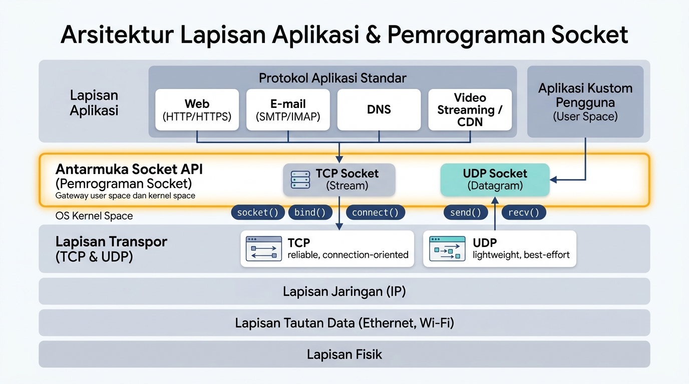
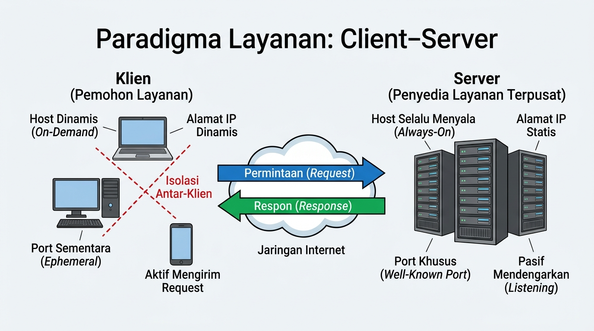
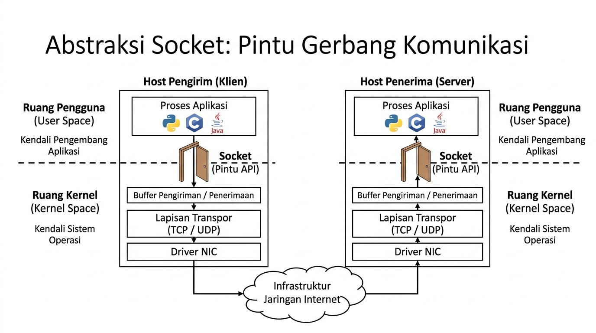
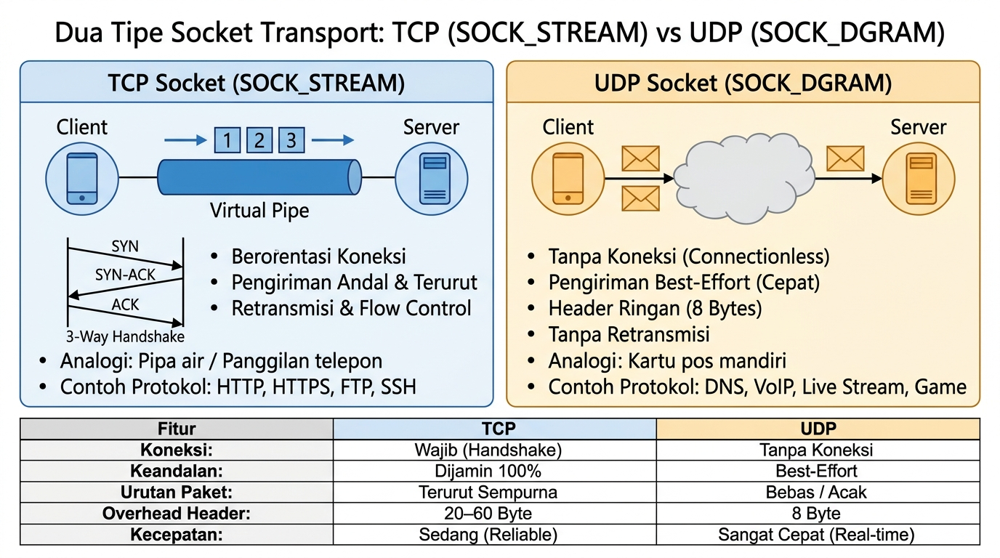
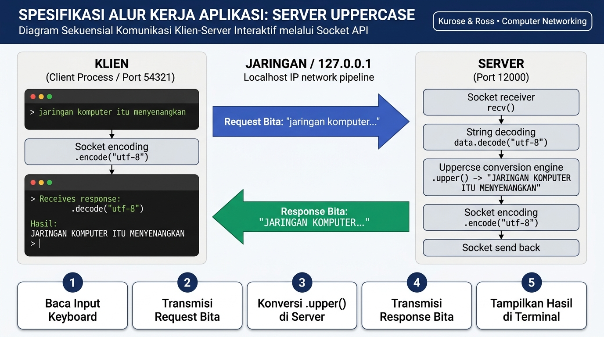
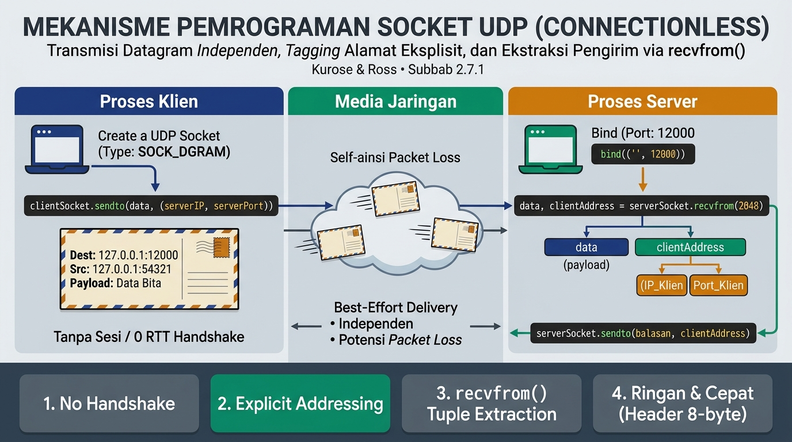
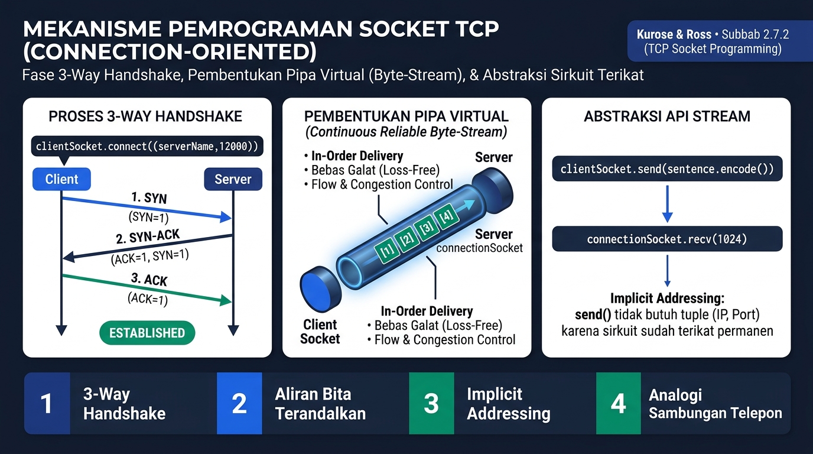
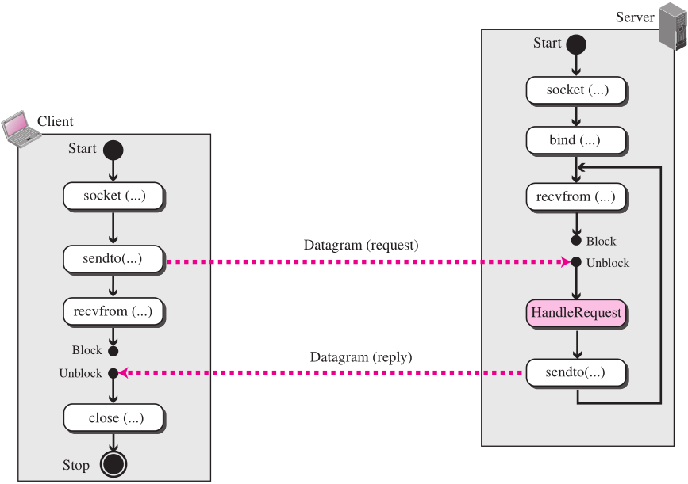
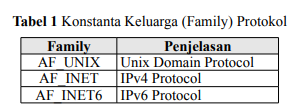
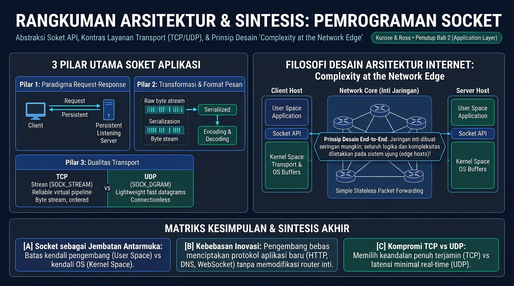

Referensi Utama: Kurose & Ross - Computer Networking: A Top-Down Approach (8th Ed)
Dosen Pengampu:
1. Fondasi & Konsep Socket API
2. Pemrograman Socket UDP & Simulasi
3. Pemrograman Socket TCP & Handshake
4. Keandalan, Timeout & Troubleshooting
settimeout()Posisi kajian Socket Programming dalam arsitektur protokol Internet:

Abstraksi Soket, Paradigma Client–Server, Pemetaan IP & Port, dan Karakteristik Layanan
Hampir seluruh layanan internet dikonstruksi menggunakan paradigma Client–Server:

Definisi: Socket adalah Pintu (Doorway) atau titik akhir (endpoint) komunikasi dua arah antara proses aplikasi dan stack protokol jaringan OS.
Batas Kendali Arsitektur (Boundary of Control):

Sistem Operasi menyediakan dua jenis transport service utama yang menentukan tipe Socket:
SOCK_DGRAM:
SOCK_STREAM:

Untuk menguji kedua jenis soket, kita membangun aplikasi konversi huruf kapital:

Komunikasi Connectionless, Format Datagram, Siklus Hidup API, dan Live Simulasi Dual-Terminal
Karakteristik fundamental soket UDP:
(IP Address, Port Number).recvfrom(), sistem mengembalikan tuple (data, clientAddress)
sehingga server tahu ke mana harus membalas.

Arsitektur Eksekusi UDPServer.py:
socket(AF_INET, SOCK_DGRAM) membuat soket
datagram IPv4 di User Space.serverSocket.bind(('', 12000)) mengikat
soket ke port 12000 pada seluruh antarmuka lokal.while True: menjaga proses server
selalu aktif menyambut datagram dari klien mana pun.recvfrom(2048) membaca muatan bita
sekaligus tuple clientAddress.sendto().listen() maupun accept(). Satu serverSocket tunggal
melayani seluruh klien secara langsung.
from socket import *
serverPort = 12000
# 1. Membuat UDP Socket (AF_INET = IPv4, SOCK_DGRAM = UDP)
serverSocket = socket(AF_INET, SOCK_DGRAM)
# 2. Mengikat (Bind) soket ke port lokal 12000
serverSocket.bind(('', serverPort))
print('Server UDP siap menerima paket...')
# 3. Infinite loop untuk terus melayani datagram yang masuk
while True:
# 4. recvfrom membaca bita payload & tuple alamat pengirim
message, clientAddress = serverSocket.recvfrom(2048)
# 5. Konversi bytes ke string, ubah ke kapital
modifiedMessage = message.decode().upper()
# 6. Mengirim balik bita balasan langsung ke klien pengirim
serverSocket.sendto(modifiedMessage.encode(), clientAddress)Arsitektur Eksekusi UDPClient.py:
clientSocket = socket(AF_INET, SOCK_DGRAM). Kernel otomatis mengalokasikan
port efemeral dinamis.
message.encode() mengubah string
keyboard menjadi bita mentah (raw bytes).sendto(..., (serverName, serverPort))
menembakkan datagram langsung ke target (0 RTT).recvfrom(2048) membaca bita balasan
dari server ke dalam buffer.clientSocket.close() melepaskan sumber daya
soket ke sistem operasi.recvfrom(2048) bersifat blocking default. Jika paket hilang di rute
jaringan, klien akan terkunci (freeze) selamanya. Masalah ini akan kita pecahkan
dengan
settimeout() pada Bagian 4.
from socket import *
serverName = '127.0.0.1' # atau hostname/IP server tujuan
serverPort = 12000
# 1. Membuat socket UDP klien
clientSocket = socket(AF_INET, SOCK_DGRAM)
message = input('Ketik kalimat huruf kecil: ')
# 2. Mengirim data mentah beserta tuple tujuan (IP, Port)
clientSocket.sendto(message.encode(), (serverName, serverPort))
# 3. Menunggu balasan (buffer 2048 bytes - BLOCKING!)
modifiedMessage, serverAddress = clientSocket.recvfrom(2048)
print('Balasan Server:', modifiedMessage.decode())
# 4. Tutup socket
clientSocket.close()Eksekusi Live Dua Terminal: Mengamati perilaku transmisi Datagram tanpa koneksi (Connectionless)
:54219) otomatis diekstrak oleh
Server dari header datagram tanpa perlu inisiasi sesi handshake sebelumnya!
Reliable Byte-Stream, 3-Way Handshake, Welcoming vs Connection Socket, dan Live Simulasi Dual-Terminal
TCP bekerja bagaikan sambungan telepon: koneksi harus dibangun sebelum komunikasi berlangsung.
connect(), OS
mempertukarkan paket kontrol (SYN, SYN-ACK, ACK) untuk menyinkronkan nomor sequence.
send() tidak perlu menyertakan tuple IP/Port lagi karena tujuan sudah
melekat pada pipa.

Perbedaan paling krusial di sisi Server TCP adalah keberadaan dua jenis soket:
serverSocket):
listen()
dan accept().connectionSocket):
accept() berhasil.
Arsitektur Eksekusi TCPServer.py:
socket(AF_INET, SOCK_STREAM) membuat
soket penyambut TCP di port 12000.serverSocket.listen(1) membuka antrian
masuk permohonan koneksi.connectionSocket, addr = serverSocket.accept() menahan proses
(blocking)
hingga 3-way handshake selesai, lalu menghasilkan soket baru khusus klien tersebut.
connectionSocket.recv(1024) dan
send() membaca/menulis langsung dari pipa virtual tanpa alamat IP.
connectionSocket.close() menutup sesi
klien, sementara serverSocket tetap aktif menyambut klien lain.serverSocket.close() di dalam perulangan while True!
from socket import *
serverPort = 12000
# 1. Membuat Welcoming Socket (SOCK_STREAM = TCP)
serverSocket = socket(AF_INET, SOCK_STREAM)
serverSocket.bind(('', serverPort))
# 2. Mulai mendengarkan antrian koneksi masuk
serverSocket.listen(1)
print('Server TCP siap menerima koneksi...')
while True:
# 3. Blocking di accept(). Saat ada klien masuk,
# OS menghasilkan connectionSocket BARU khusus klien ini
connectionSocket, addr = serverSocket.accept()
# 4. Menerima data stream langsung dari pipa virtual
sentence = connectionSocket.recv(1024).decode()
capitalizedSentence = sentence.upper()
# 5. Mengirim balasan dan menutup connectionSocket
connectionSocket.send(capitalizedSentence.encode())
connectionSocket.close() # Sesi klien ini selesai
# (serverSocket welcoming socket TIDAK DITUTUP!)Arsitektur Eksekusi TCPClient.py:
clientSocket = socket(AF_INET, SOCK_STREAM) membuat soket stream TCP.
clientSocket.connect((serverName, serverPort)) memicu pertukaran segmen SYN
→ SYN-ACK → ACK. Terhubung sebelum data pertama dikirim.
clientSocket.send(sentence.encode())
mengalirkan bita ke pipa tanpa parameter IP/Port lagi.clientSocket.recv(1024) membaca bita
balasan dari pipa virtual (blocking).clientSocket.close() mengirim segmen
FIN untuk membongkar koneksi.connect() maupun recv() adalah operasi blocking.
Jika server
hang di tengah transmisi stream, klien terkunci. Solusinya dibahas tuntas pada Slide 21
dengan settimeout().
from socket import *
serverName = '127.0.0.1'
serverPort = 12000
# 1. Membuat socket TCP klien (SOCK_STREAM)
clientSocket = socket(AF_INET, SOCK_STREAM)
# 2. Inisiasi koneksi 3-way handshake ke server (BLOCKING!)
clientSocket.connect((serverName, serverPort))
sentence = input('Ketik kalimat huruf kecil: ')
# 3. Mengalirkan data ke pipa tanpa target IP lagi
clientSocket.send(sentence.encode())
# 4. Menerima bita stream balasan (BLOCKING!)
modifiedSentence = clientSocket.recv(1024)
print('Balasan Server:', modifiedSentence.decode())
# 5. Menutup koneksi TCP (FIN-ACK handshake)
clientSocket.close()Eksekusi Live: Pembuktian 3-Way Handshake, Pembedaan Welcoming vs Connection Socket, dan Virtual Pipe
accept() berhasil, Server mencetak connectionSocket khusus untuk
menangani klien ini, sementara serverSocket (Welcoming Socket) tetap bebas mendengarkan
klien lain.
Penanganan Blocking I/O, Penerapan settimeout(), Kasus The Shepherd Boy, Komparasi API & Best Practices
Korelasi dengan Kode Slide Sebelumnya:
Pada UDPClient.py (Slide 12) dan TCPClient.py (Slide 18),
pemanggilan fungsi membaca seperti recvfrom() dan recv() berjalan
secara blocking default. Jika paket hilang atau server hang, program klien
membeku (freeze) tanpa batas waktu.
Solusi: clientSocket.settimeout(detik)
socket.timeout.try ... except agar aplikasi dapat
melakukan mitigasi secara anggun (graceful handling) tanpa mengalami
crash.
settimeout() dan
try...except ini berlaku identik untuk mengamankan UDPClient.py
maupun TCPClient.py.
import socket
# Mengamankan TCPClient dari Slide 18 dengan Timeout:
clientSocket = socket.socket(socket.AF_INET, socket.SOCK_STREAM)
# 1. Pasang batas waktu tunggu maksimal 10 detik
clientSocket.settimeout(10.0)
try:
# 2. Inisiasi koneksi ke server
clientSocket.connect(('127.0.0.1', 12000))
clientSocket.send(b"Hello Server")
# 3. Menerima balasan (terlindungi batas 10 detik)
data = clientSocket.recv(1024)
print("Diterima:", data.decode())
except socket.timeout:
print("Error: Batas waktu 10 detik habis! Server tidak merespons.")
except socket.error as e:
print("Kesalahan jaringan / koneksi:", str(e))
finally:
# 4. Pastikan soket selalu ditutup dengan aman
clientSocket.close()Studi Kasus Keamanan Jaringan: Mencegah serangan Idle Connection / Slowloris di mana Klien iseng terhubung ke Server tetapi tidak pernah mengirim data.
Analoginya:
connectionSocket.settimeout(10).
from socket import *
serverSocket = socket(AF_INET, SOCK_STREAM)
serverSocket.bind(('', 12000))
serverSocket.listen(1)
counter = 0
while counter < 3:
connectionSocket, addr = serverSocket.accept()
# Memasang batas waktu 10 detik khusus untuk koneksi anak gembala ini
connectionSocket.settimeout(10.0)
try:
wolf_location = connectionSocket.recv(1024).decode()
send_hunter(wolf_location) # Dispatch bantuan
connectionSocket.send('hunter sent'.encode())
except timeout:
# Menangkap waktu habis saat anak gembala diam saja
counter += 1
print(f"Bocah iseng ketahuan! Peringatan ke-{counter}/3")
finally:
connectionSocket.close()
print("Batas toleransi 3x habis! Server menolak anak gembala permanen.")Studi Kasus The
Shepherd Boy:
Penanganan Klien Iseng yang Terhubung Namun Diam Menggunakan settimeout(10)
settimeout(), klien yang lambat atau sengaja diam (misal
serangan Slowloris) akan menyandera thread/socket server selamanya (infinite
blocking).
| Dimensi Analisis | UDP Socket (Datagram) | TCP Socket (Stream) |
|---|---|---|
| Konstanta Tipe | AF_INET, SOCK_DGRAM |
AF_INET, SOCK_STREAM |
| Inisiasi Sesi | Tanpa koneksi (No handshake) | 3-Way Handshake via connect() |
| Soket di Sisi Server | 1 Soket Tunggal untuk semua pengirim | 2 Jenis Soket (1 Welcoming + 1 Dedicated Connection Socket) |
| Pengiriman Data | sendto(bytes, (ip, port)) |
send(bytes) (Pipa virtual terbentuk) |
| Penerimaan Data | recvfrom(bufsize) → (data, addr) |
recv(bufsize) → data |
| Integritas & Urutan | Bisa hilang, rusak, atau teracak (unreliable) | Terurut rapi, retransmisi otomatis (reliable) |
| Batas Pesan (Framing) | Mempertahankan batas datagram | Aliran bita berkesinambungan (stream of bytes) |
| Kasus Penggunaan Ideal | DNS, VoIP, Live Video, Game Online FPS | HTTP/HTTPS, File Transfer (FTP), E-mail, SSH |
Errno 48 Terjadi saat server dimatikan dan langsung
dinyalakan kembali, port masih di-hold dalam status TIME_WAIT oleh kernel
OS.
Solusi Wajib:
s.setsockopt(
SOL_SOCKET,
SO_REUSEADDR, 1
)TypeError Soket jaringan mentransmisikan bita mentah (raw bytes), bukan string teks Unicode Python.
Solusi Wajib:
pesan.encode('utf-8')data.decode('utf-8')Best Practice Pemilihan nomor port pengujian:
12000).Setelah menguasai Socket, kita telah menutup bab Application Layer dengan sempurna. Hal esensial yang kita pelajari:
"Complexity at the network edge!"

Implementasi Socket Client–Server Python (TCP/UDP) & Validasi Jaringan
Rancang dan buktikan implementasi program Client–Server Socket menggunakan Python 3 dengan skenario lab berikut:
1. Buatlah sepasang skrip Python: server.py dan
client.py menggunakan protokol TCP atau UDP.
2. Klien menerima input kalimat teks atau operasi matematika dari terminal dan mengirimkannya ke Server tujuan.
3. Server memproses request (misalnya membalik urutan string / Reverse String, penghitung frekuensi kata, atau kalkulator sederhana) lalu mengirimkan hasil balasan ke Klien.
4. Terapkan mekanisme settimeout(10) dan penanganan
eksepsi try ... except pada soket untuk menangani potensi kegagalan jaringan
atau timeout.
5. Ujilah program dengan dua jendela terminal secara lokal (atau dua laptop berbeda dalam satu jaringan Wi-Fi/LAN kampus).
6. Dokumentasikan tangkapan layar jalannya Server dan Client serta sertakan analisis kode sumber dalam format laporan.
Pertemuan berikutnya: Pertemuan 12: Application Layer (Web & HTTP, E-mail, dan DNS)
Persiapkan pemahaman mengenai arsitektur protokol aplikasi internet tingkat tinggi, format request/response HTTP, status code, serta resolusi alamat via Domain Name System (DNS).